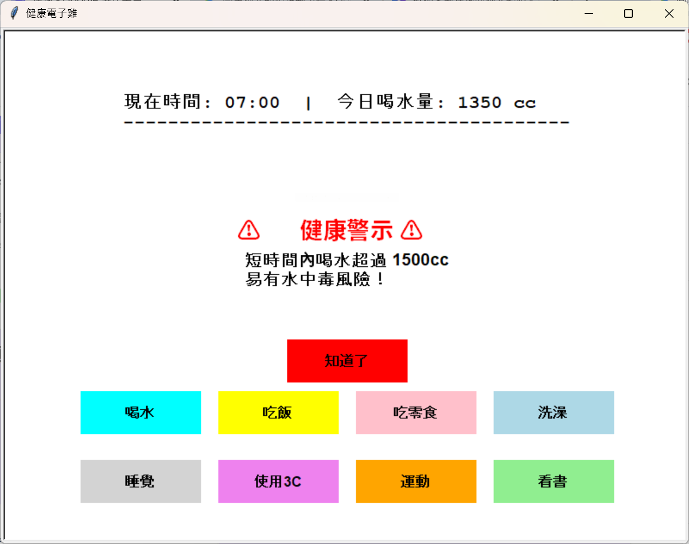
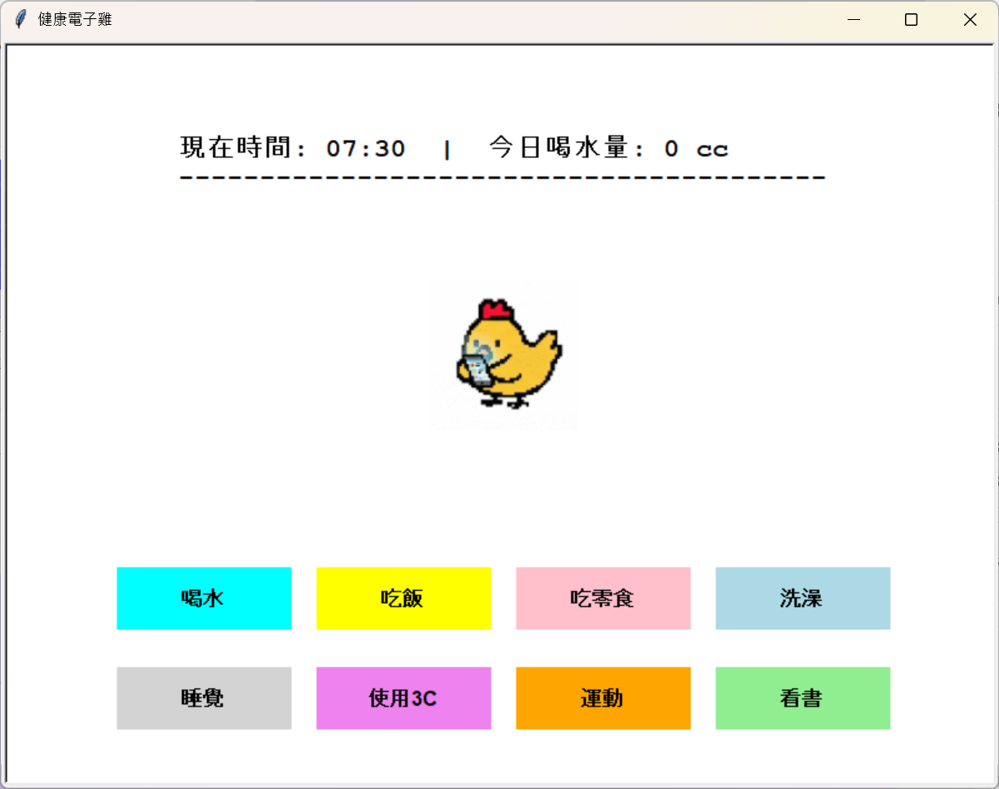
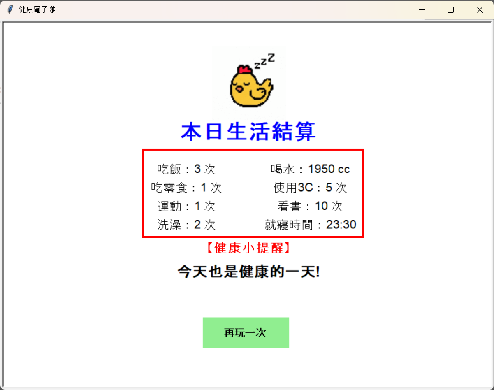
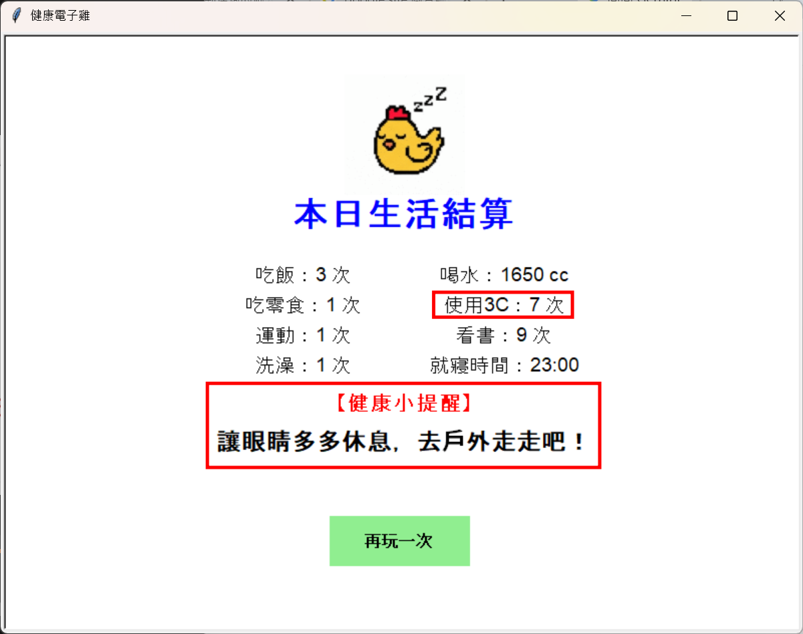

📖 作品簡介
本作品以童年經典的「寵物電子雞」為靈感，結合健康生活習慣養成主題所開發的衛教養成互動遊戲。使用者可透過介面上的各項行動按鈕，指派小雞做出對應的生活行為，例如飲食飲水定量控制、3C 螢幕使用時間管理、睡眠作息調整與運動習慣養成。
遊戲內亦設計了反向衛教機制，例如當使用者短時間內過度連續點擊「喝水」時，系統將主動跳出「水中毒」的警示視窗。希望透過照護小雞一天的生活起居，讓學習者在充滿樂趣的陪伴過程中，深刻了解生活日常習慣對身心健康的真實影響。
本作品以童年經典的「寵物電子雞」為靈感，結合健康生活習慣養成主題所開發的衛教養成互動遊戲。使用者可透過介面上的各項行動按鈕，指派小雞做出對應的生活行為，例如飲食飲水定量控制、3C 螢幕使用時間管理、睡眠作息調整與運動習慣養成。
遊戲內亦設計了反向衛教機制，例如當使用者短時間內過度連續點擊「喝水」時，系統將主動跳出「水中毒」的警示視窗。希望透過照護小雞一天的生活起居，讓學習者在充滿樂趣的陪伴過程中，深刻了解生活日常習慣對身心健康的真實影響。
下方為遊戲實際操作展示影片，展示小雞在日常作息各時段的行為動作、數值增減反饋與特殊警示介面：
本作品將專業健康衛教原則轉化為具體的互動機制，各項核心特色功能如下：

強調水分攝取需定時定量，若使用者在短時間內連續多次點選喝水按鈕，遊戲將觸發「水中毒」警示視窗，藉此傳達正確飲水觀念。

使用者點擊不同的日常行為按鈕時，畫面中的小雞會對應切換呈現出專屬的動作圖片，帶來直觀且富有陪伴感的互動回饋。

在遊戲結算畫面中，系統會清楚統計並列出使用者當天各項行為動作的累計次數記錄，讓一日生活習慣數據一目了然。

依據結算產生的各項次數統計，系統會評估並給出針對性的衛教分析與健康生活建議圖片，引導學習者改善作息與生活型態。